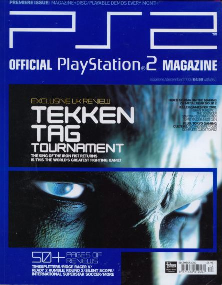

Y2k takes place around the late 90's and the early 2000's.

Artist: Ippei Gyoubu
The name Y2K came from the year 1999 when people thought the world would end when the year turned 2000.
A lot of the Y2K aesthetic is dealing oversaturated colors, Japanese street wear, and PS2 area 3D renders.
You will see a lot of this art from gaming magazines, posters, and music albums from the 2000s.
